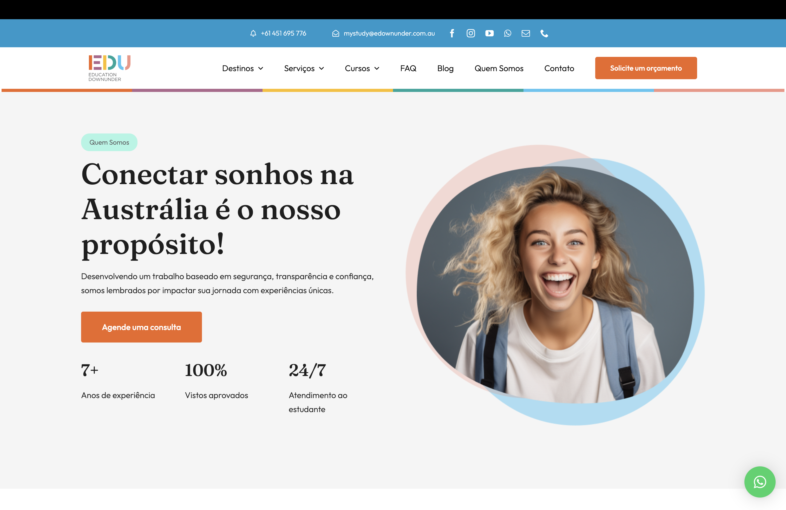

Education Downunder: Designing a new website to enhance user experience
How to enhance customer experience and support students during the process of studying abroad?
Kick-off Meeting
This case study will describe process I use while working on a website design project. The first phase is the kick-off where we determine the primary goals of the project. For Education Downunder we defined the two main goals below:
- Enhance user experience, and provide comprehensive support to the student.
- Organise content: Structure the website's information hierarchy logically.
Market Analysis
In analyzing competitors for our website project, I rely on desk research to explore their websites, content strategies, and digital presence. By examining design elements, content quality, and online metrics, we gain valuable insights to refine our strategy, improve user engagement, and stand out in the market.
Main competitors:
- https://tagarela.com.au/
- https://connectionflow.com.au/
- http://www.tripstudy.com.br/home
- https://onewayintercambio.com.br/
- https://www.gostudy.com.au/
- https://experteducation.com/australia/
Information Structure and Sitemap
I leverage Relume to streamline the creation of wireframes and sitemaps for my website projects. With its intuitive interface and robust features, Relume allows me to quickly sketch out the layout and structure of web pages, ensuring clarity and coherence in design. Its collaborative tools facilitate seamless communication with team members, enabling efficient brainstorming and iteration. By utilizing Relume's capabilities, I am able to visualize the user journey, optimize navigation flow, and ensure alignment with project objectives, resulting in more effective and user-friendly website designs.
Relume website
Sitemap built using Relume
Wireframe
The low-fidelity wireframe phase involves creating basic, simplified representations of web page layouts and structures. These wireframes typically use simple shapes, placeholders, and minimal detail to outline the fundamental elements and content arrangement without focusing on visual aesthetics. Low-fidelity wireframes serve as a blueprint for the website's layout, allowing for quick iteration and refinement of the overall design before investing significant time and resources into high-fidelity prototypes. By focusing on functionality and layout early in the design process, low-fidelity wireframes help identify potential usability issues, clarify user flow, and ensure alignment with project objectives.
Usability Testing
This phase helps identify any usability issues, navigation problems, or areas for improvement in the design before moving on to higher-fidelity prototypes or development. By incorporating usability testing early in the design process, teams can ensure that the final product meets the needs and expectations of its intended users, leading to a more successful and satisfying user experience.
Validating structure and building content
After user testing, we finalize the website structure based on feedback. Then, we begin crafting content for each page, ensuring it aligns with the design and user needs. This step ensures a cohesive and engaging online experience. This is the final page structure that was used for desiging and building the website.

Style Guide, User Interface, and Accessibility
The next phase involves creating a style guide and refining the user interface (UI). The style guide establishes consistent visual elements such as colors, typography, and iconography to maintain brand identity across the website. It also outlines UI components and their usage, ensuring uniformity and coherence in design. Meanwhile, UI refinement focuses on enhancing the visual appeal and usability of the interface based on feedback and best practices. This phase ensures a polished and cohesive look for the website while maintaining usability and brand consistency.
Style Guide

High-Fi User Interface
The process of building the user interface involves multiple iterations of feedback and improvement. It begins with initial designs based on project requirements and stakeholder input. These designs are then tested with users to gather feedback on usability, clarity, and effectiveness. Based on this feedback, the UI is refined and improved, incorporating suggestions and addressing any identified issues. This iterative cycle continues until the UI meets the desired standards of usability, aesthetics, and functionality. Each loop of feedback and improvement ensures that the final user interface is intuitive, visually appealing, and optimally serves the needs of its users.
Accessibility
To ensure our website adheres to accessibility standards, we meticulously test it against guidelines like WCAG and other pertinent standards. This entails assessing various facets such as text alternatives for non-text content, keyboard operability, color contrast, navigational logic, form accessibility, media inclusivity, responsive design, and compatibility with assistive technologies. By conducting rigorous testing, we ensure that our website is accessible to all users, regardless of their abilities or assistive technology requirements.
Building and Deploying
After finalising the design phase it was time for building and deploying the website using WordPress. Below you can find the phases taken for implementing it.
- Set up WordPress or chosen content management system (CMS)
- Develop the website's structure and functionality
- Apply the user interface (UI) and user experience (UX)
- Implement responsive design for compatibility across devices
- Create and optimize content for each page
- Install and configure necessary plugins or extensions for added functionality
- Conduct thorough testing to ensure functionality, performance, and cross-browser compatibility
- Review and refine the website based on feedback from stakeholders and usability testing
- Prepare documentation and training materials for website maintenance and administration
- Launch the website and monitor its performance post-launch